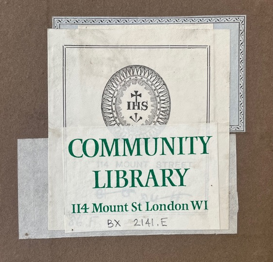

I am a research student at the Institute of English Studies, School of Advanced Study, University of London.
The Mount Street Catalogues: Reconstructing a Nineteenth-Century Jesuit Library

This collaborative project aims to reconstruct and recontextualize the historic library of the Jesuits in Britain at 114 Mount Street, London, highlighting its historical, cultural, and global significance. Established in the mid-nineteenth century, the Mount Street library, which is now preserved by the British Jesuit Archives, originally boasted a diverse array of books across literature, history, poetry, and theology. However, significant portions of this collection were deaccessioned, as over time other books were acquired from elsewhere, changing the scope, purpose and overall character of the library.
This project leverages two unexplored nineteenth century manuscript catalogues—dating from the 1850s and 1890s respectively— to better understand the evolving nature of Jesuit book collecting in London over the nineteenth century.
Jointly supervised between the IES and the British Jesuit Archives, and supported by LAHP funding.
Key research questions:
- How did the Jesuits in London form a library, and to what extent did the collection - and the way it was used and understood - change in the nineteenth century in relation to wider religious, political and informational contexts?
- What is the relationship between the two "Mount Street Catalogues" and the books that remain at the British Jesuit Archives?
- What are we doing when we "reconstruct" historic libraries?
Publications and outputs
- "James Stanley SJ the Jesuit Printer of Roehampton." British Jesuit Archive (blog) March 2026.